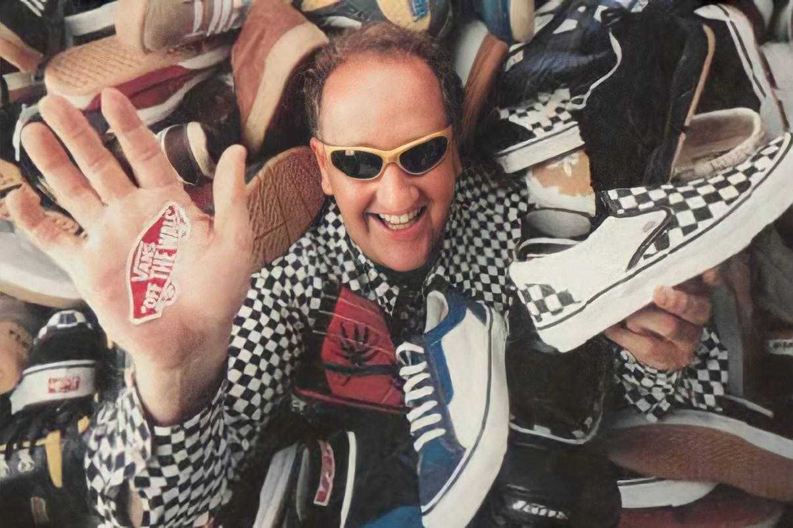

История
Пол Ван Дорен Основатель Vans Джеймс Ван Дорен Основатель Vans. В отличии от старшего брата, Джеймс Ван Дорен закончил школу и даже отучился два года в университете. После этого он тоже устроился в Randolph Rubber Manufacturing Co., где в течение десяти лет добивался должности управляющего. Несмотря на отсутствие образования, Пол Ван Дорен также достиг успеха — за двадцать лет он дослужился до звания вице-президента.
